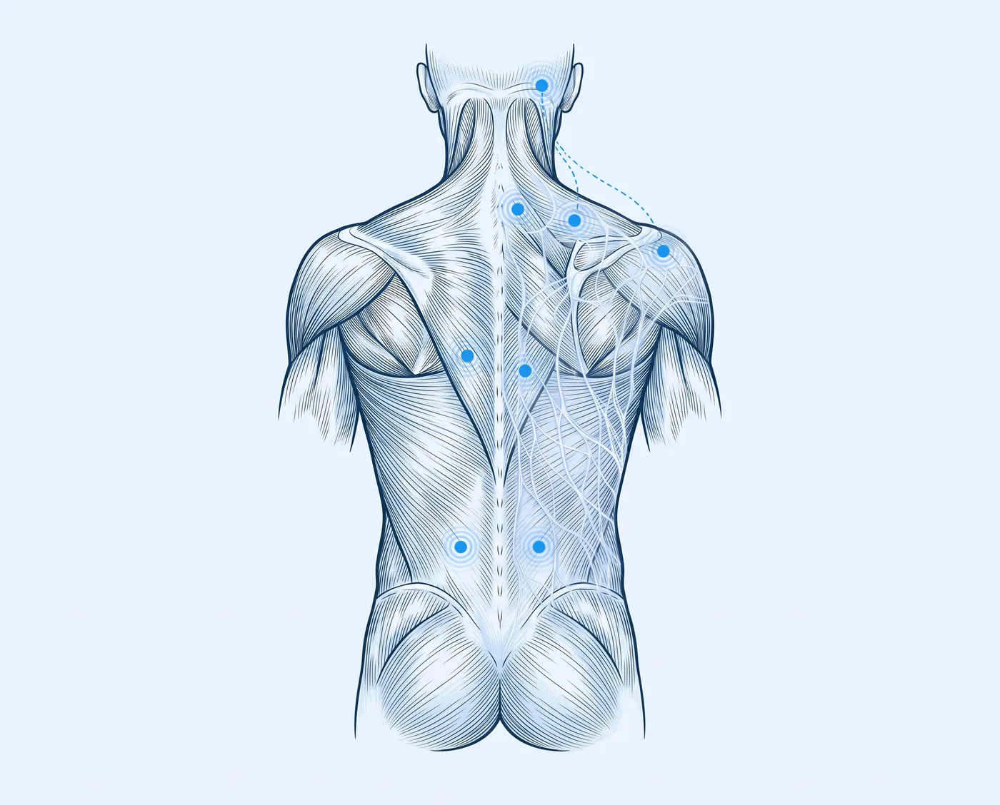
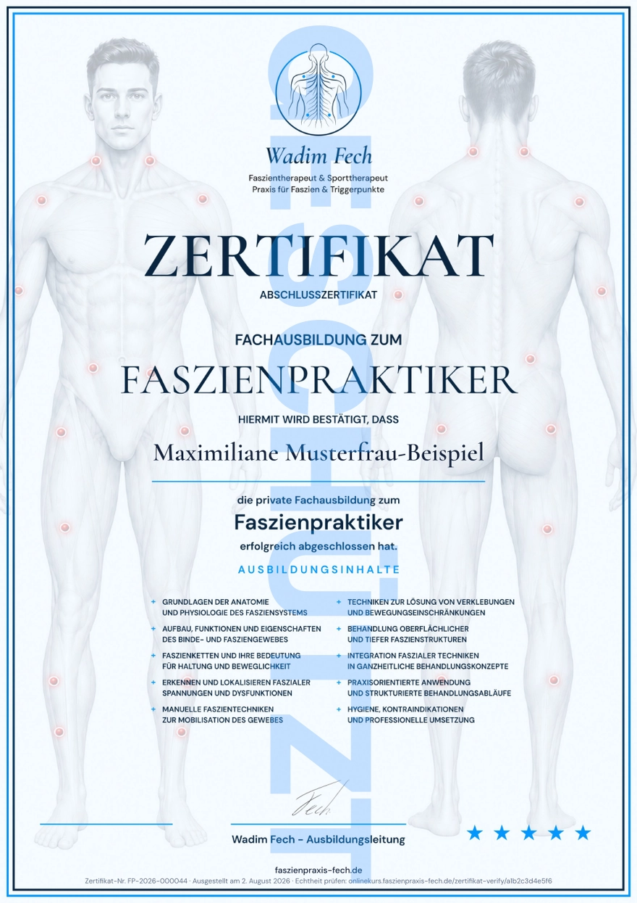

Verstehe, woher Druck und Spannungen im Körper kommen
600 €
- Ganzheitliche Faszien- & Gewebearbeit
- Digitale Lernunterlagen
- Offizielles Zertifikat

CPD · IPHM · IAOTH
100 %
Online
17
Lernmodule
∞
Eigenes Tempo
Online-Fachausbildung
Fachausbildungen für ganzheitliche Faszien- und Muskelarbeit – ortsunabhängig, praxisorientiert und an deinen Alltag anpassbar. Für Quereinsteiger, Therapeuten, Masseure und Wellness-Fachkräfte.
Flexibel lernen
Ausführliche digitale Lernunterlagen und praxisorientierte Inhalte, Schritt für Schritt. Alles, was du brauchst, ist ein Internetzugang – so passt die Weiterbildung neben Beruf und Familie.
Lernaufbau
Faszien- und Muskelsystem, funktionelle Zusammenhänge im Bewegungsapparat.
Spannungsbilder analysieren, muskuläre Dysbalancen erkennen.
Professionelle Konzepte im präventiven Bereich entwickeln und einsetzen.
Aktuelle Konzepte mit direkter Praxisanbindung und Spezialisierung.
Deine Kompetenz
Funktionelle Zusammenhänge erkennen, Spannungsmuster einordnen, gezielt umsetzen.
Dein Leistungsportfolio erweitern – als qualifizierter Ansprechpartner im präventiven Bereich.
Spezialisierte Zusatzkompetenz, klar abgegrenzt von klassischen Wellness-Angeboten.
Investition
Einmalige Zahlung inkl. MwSt., lebenslanger Zugang und offizielles Abschlusszertifikat.
600 €
850 € statt 1.090 €
490 €
Aus der Praxis entsteht eine eigene Online-Ausbildung. Die Anwendungen werden gerade gefilmt – danach geht der Kurs online. Interesse? mein-therapeut@web.de